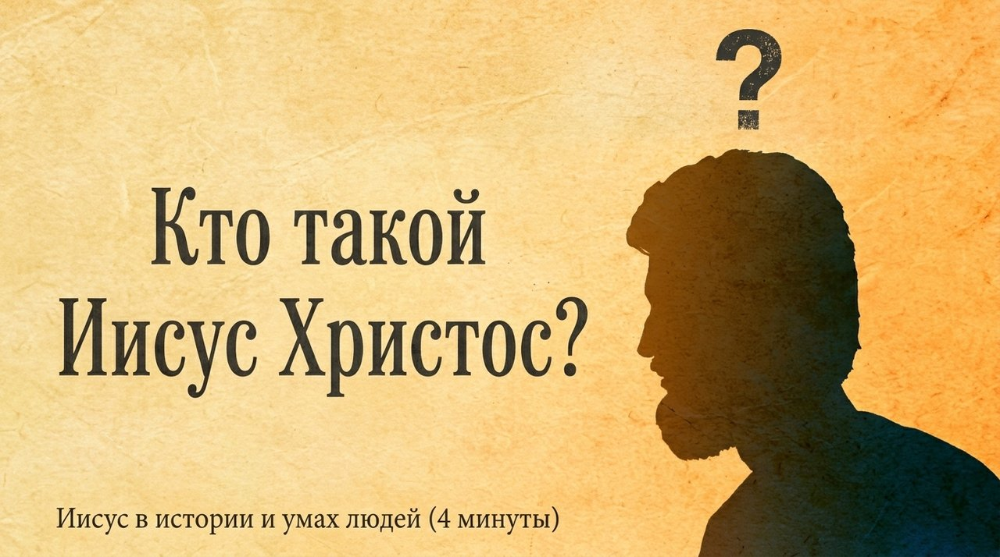
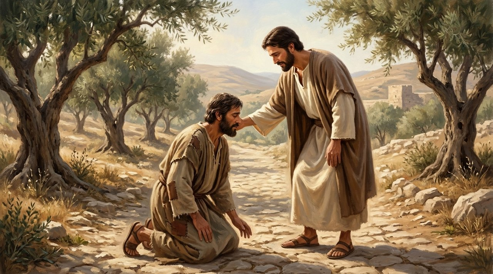
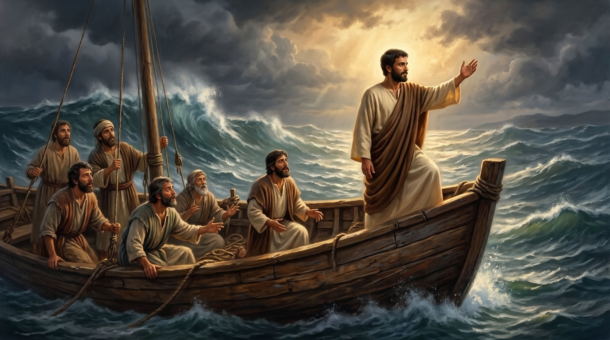
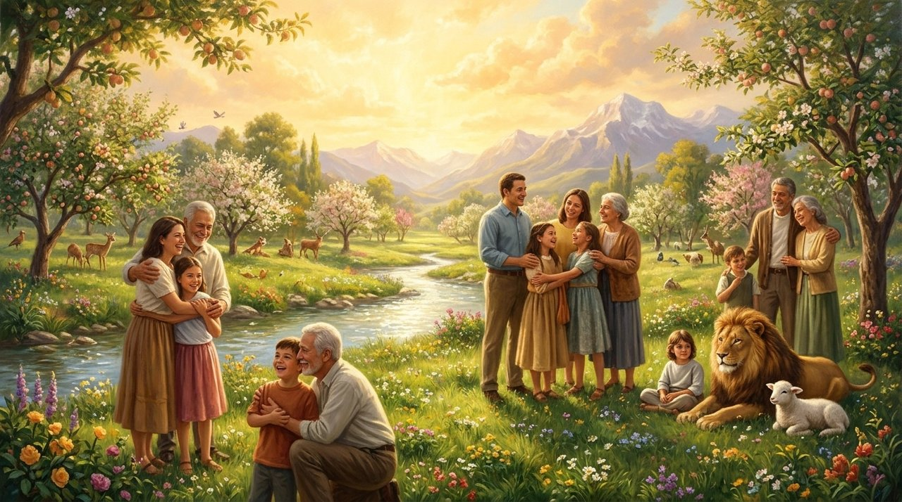
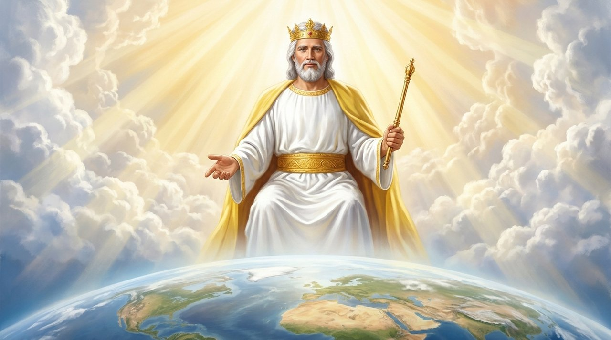

Публичная речь № 140 · 30 минут
Кто такой Иисус Христос?
Примечание для докладчика: Обрати внимание слушателей на то, что Иисус играет главную роль в исполнении Божьего замысла. Тактично упомяни, какие ошибочные представления об Иисусе Христе распространены в вашей местности.
Сводный план речи, контрольные точки таймера и расписание слайдов (7 шт.)
| Раздел |
Длит. |
Остаток к концу |
Зачитать |
Иллюстрации |
| 1. Многие не знают, кто такой Иисус... |
4 мин |
26:00 |
Мф 16:13, 14 |
№ 1 (титульный слайд) |
| 2. Истина об Иисусе Христе |
12 мин |
14:00 |
Мф 16:15, 16 |
№ 2 (прокажённый), № 3 (таблица пророчеств) |
| 3. Иисус Христос — самый лучший правитель |
9 мин |
05:00 |
— |
№ 4 (буря), № 5 (обновлённая земля), № 6 (пожар) |
| 4. Узнайте, кто Иисус на самом деле |
5 мин |
00:00 |
Мф 16:17 |
№ 7 (небесный Царь) |

Нажмите, чтобы увеличить
Если бы мы вышли на улицу и спросили людей: «Слышали ли вы об Иисусе?» или «Кто такой Иисус Христос?» — мы наверняка услышали бы множество самых разных мнений.
Всего за три с половиной года своего служения на земле Иисус оставил глубокий след в сердцах людей. Начав с небольшой группы учеников, он изменил ход истории: сегодня христианами себя называют более двух миллиардов человек. Даже те, кто не считает себя христианами, признают, что учение Иисуса оказало огромное влияние на человечество, а предполагаемый год его рождения стал точкой отсчёта новой эры, принятой по всему миру.
Само существование Иисуса Христа почти никто не оспаривает — даже среди учёных, привыкших всё ставить под сомнение. Когда физика-теоретика Альберта Эйнштейна спросили, считает ли он Иисуса исторической личностью, он ответил: «Ну разумеется! Читая Евангелия, невозможно не почувствовать реальное присутствие Иисуса, его личность дышит в каждом слове, никакой миф не обладает столь мощной жизненной силой».
■ УБРАТЬ ИЛЛЮСТРАЦИЮ № 1 С ЭКРАНА (перед чтением Библии)
Однако, хотя большинство не сомневается, что Иисус жил, ясного понимания того, кем он был на самом деле, у людей до сих пор нет. Так было и в первом веке, когда сам Иисус ходил по земле. Давайте откроем и прочитаем Матфея 16:13, 14:
Зачитать · Матфея 16:13, 14
«Когда Иисус пришёл в окрестности Кесарии Филипповой, он спросил учеников: „Что люди говорят о Сыне человеческом? Кем они его считают?“ Они сказали: „Одни говорят, что он Иоанн Креститель, другие — Илья, третьи — Иеремия или один из пророков“».
Как видно, люди того времени не говорили об Иисусе ничего плохого — они сравнивали его с великими пророками и признавали, что он особенный человек. И всё же большинство за ним не пошло, потому что он не оправдал их ожиданий. Одни ждали от него роли политического деятеля и земного царя, другие хотели, чтобы он стал их судьёй, а третьих привлекала лишь возможность получить бесплатную пищу и увидеть зрелищные чудеса.
И сегодня у многих неверное представление об Иисусе. Одни считают его просто хорошим человеком, мудрым учителем или символом рождественских праздников, другие — пророком или социальным реформатором. А миллионы тех, кто называет себя христианами, верят, что он сам — Бог.
Но Библия — единственный надёжный источник, который даёт точные ответы. Что же в ней говорится о том, кто такой Иисус Христос, почему он пришёл на землю и что он делает сейчас?
Чтобы приблизиться к истине, обратимся к Евангелиям. Ученики Иисуса под руководством святого духа оставили достоверный и живой рассказ о его личности, учениях и делах — рассказ, который убедительно доказывает: Иисус не был обычным человеком. В Библии описана даже реакция его слушателей: в Матфея 7:28, 29 мы читаем, что люди были поражены его учением.
Читая Евангелия, мы видим, что Иисус воплощал в себе качества, которые ценят люди во всём мире. Он глубоко сострадал больным, хотя сам обладал совершенным здоровьем. В отличие от книжников и фарисеев, чьи сердца очерствели, Иисус не отказывал людям в помощи даже в субботу. Он был открыт и доступен каждому — к нему тянулись и дети, и пожилые.

Нажмите, чтобы увеличить
Однажды к нему подошёл прокажённый, которому закон запрещал приближаться к людям. Иисус не осудил его, а увидел его боль. В Матфея 8:2, 3 записано: «„Господин, если ты только захочешь, ты сможешь меня очистить“. Протянув руку, Иисус прикоснулся к нему и сказал: „Хочу! Очистись!“ И тотчас же он очистился от проказы».
■ УБРАТЬ ИЛЛЮСТРАЦИЮ № 2 С ЭКРАНА
Иисус трудился ради людей, даже когда сильно уставал. Утомлённый жарой и долгой дорогой, он присел у колодца и всё равно завёл важный разговор с самаритянкой. Он проявлял рвение, рассказывая людям об Отце, несмотря на их равнодушие. А в последнюю ночь своей земной жизни он подал непревзойдённый пример смирения, вымыв ноги своим ученикам.
Кроме того, Иисус учил людей, как приближаться к Богу. В 6-й главе Евангелия от Матфея он оставил прекрасный образец молитвы, известный как «Отче наш». Это не просто заученные слова — она помогает правильно расставить приоритеты, показывая, что на первом месте всегда должны стоять святость Божьего имени и приход Его Царства. Иисус открыл нам сердце Отца и помог почувствовать, насколько Иегова близок и как сильно он нас любит. В Евангелиях мы видим, с какой радостью и одобрением Иегова отзывался о своём Сыне — это заверяет нас, что, радуя Бога, мы тоже обретаем его любовь.
Ещё одно веское доказательство того, что Иисус был не просто человеком, — многочисленные пророчества, записанные за столетия до его рождения.
Пророчества о Мессии
| Событие |
Пророчество |
Исполнение |
| Потомок царя Давида |
Исаия 9:7 |
Матфея 1:1, 6–17 |
| Родится от девственницы |
Исаия 7:14 |
Матфея 1:18–25 |
| Предан за 30 серебряных монет |
Захария 11:12 |
Матфея 26:14–16 |
| Подвергнется насмешкам |
Псалом 22:7, 8 |
Матфея 27:39–43 |
| Похоронен у богатого |
Исаия 53:9 |
Матфея 27:57 |
На слайде мы видим лишь несколько примеров таких пророчеств и их точного исполнения:
- Пророк Исаия предсказал, что Мессия произойдёт из рода царя Давида и родится от девственницы (Исаия 7:14; 9:7).
- Захария указал, что его предадут ровно за тридцать серебряных монет (Захария 11:12).
- Псалмопевец и Исаия за сотни лет описали даже детали его казни и погребения — что над ним будут насмехаться и что он будет похоронен у богатого (Псалом 22:7, 8; Исаия 53:9).
Все эти пророчества с точностью исполнились на Иисусе.
■ УБРАТЬ ИЛЛЮСТРАЦИЮ № 3 С ЭКРАНА (перед чтением Библии)
Что ещё мы узнаём из Писания об Иисусе? Он никогда не называл себя Богом и не ставил себя на место Отца. И первые ученики тоже не считали его Богом. Кем же они его считали? Давайте снова посмотрим на 16-ю главу Евангелия от Матфея и прочитаем стихи 15 и 16:
Зачитать · Матфея 16:15, 16
«Тогда он спросил их: „А вы как считаете, кто я?“ Симон Пётр ответил: „Ты — Христос, Сын живого Бога“».
Сегодня, слушая сложные объяснения о Троице, многие запутываются и слышат в ответ: «Это тайна, её невозможно понять». Но Иисус никогда не запутывал людей — он говорил просто и ясно. Всякий раз, уча людей или совершая могущественные чудеса, он воздавал всю славу Богу. В Иоанна 7:16 он прямо сказал: «То, чему я учу, — не моё, а того, кто меня послал». А в Иоанна 14:10 добавил: «То, что я говорю вам, я говорю не от себя; это Отец, который в единстве со мной, исполняет свои дела». Возвращая зрение слепым и воскрешая мёртвых, Иисус не привлекал внимание к себе — он указывал на своего Отца.
Откуда же Иисус так глубоко знал Бога? Ответ даёт сама Библия: до прихода на землю Иисус жил на небесах. В Иоанна 6:38 он говорит: «Я сошёл с неба». А в Колоссянам 1:15, 16 о нём сказано, что он — «образ невидимого Бога, первенец из всего творения», и всё остальное было создано через него. Иисус был первым и единственным, кого Бог Иегова сотворил непосредственно. Именно поэтому Библия по праву называет его «единородным Сыном Бога» (Иоанна 3:18). Проведя рядом с Отцом несчётные века, он впитал Его качества и стал точным отражением Божьей личности.
Зачем же он оставил небо и пришёл на землю? Прежде всего, Бог послал его, чтобы учить истине и проповедовать добрую весть о Царстве Бога (Матфея 4:17; Иоанна 18:37). Само его имя — Иисус, по-еврейски Иешуа — означает «Иегова спасает». Как обещанный Мессия, или Христос, он пришёл ради нашего спасения. В конце своего земного пути он добровольно отдал свою совершенную жизнь в жертву за человечество. Как записано в Иоанна 3:16, Бог отдал своего Сына, «чтобы каждый, кто проявляет в него веру, не погиб, но имел вечную жизнь». Эта жертва открыла перед нами путь к прощению грехов, дружбе с Богом и вечной жизни.
Но смерть не стала для Иисуса концом. Иегова воскресил его к небесной жизни, посадил по свою правую руку и наделил царской властью (Деяния 2:32, 33). Сам Иисус подтвердил это в Матфея 28:18: «Мне дана вся власть на небе и на земле». Выше него — только сам Бог. Иисус стал Царём царей и получил силу устранить любое зло.
Сегодня на земле правят люди, и, увы, результаты их правления печальны. Из-за гордости, амбиций и жажды власти вспыхивают войны: только с 1945 года в мире произошло более 300 вооружённых конфликтов. Экология страдает от разрушения, а в то время как в одних странах люди голодают, в других тонны еды выбрасываются на свалку. Ещё мудрый царь Соломон точно подметил в Экклезиасте 8:9: «Во все времена человек господствует над человеком ему во вред».
Человечество остро нуждается в хорошем правительстве. Может ли Иисус стать тем самым идеальным Правителем? Несомненно!
Прежде всего, он обладает всеми качествами и способностями настоящего руководителя. За ним шли тысячи людей, а сегодня миллионы по всему миру стараются жить по его учениям.

Нажмите, чтобы увеличить
Находясь на земле, он на деле доказал свою силу и власть: он исцелял любые болезни, воскрешал умерших, например своего друга Лазаря, одним словом успокоил свирепую бурю и накормил тысячи голодных людей несколькими хлебами и рыбами (Марка 4:39; Иоанна 11:43, 44). В нём сочетаются могущество и искренняя забота.
■ УБРАТЬ ИЛЛЮСТРАЦИЮ № 4 С ЭКРАНА
Кроме того, Иисус по-настоящему понимает нас. В отличие от многих правителей, выросших в роскоши и далёких от нужд народа, Иисус сам жил среди простых людей. Он вырос в скромной семье плотника, с юности знал тяжёлый труд и лично прошёл через повседневные человеческие трудности. Он знает, что значит быть одним из нас.
Увидев его чудеса и заботу, люди в первом веке захотели немедленно сделать его царём (Иоанна 6:14, 15). Но Иисус отказался. Почему? В Иоанна 18:36 он ясно объяснил: «Моё царство не от этого мира». Ведь, как говорится в 1 Иоанна 5:19, «весь мир лежит во власти Злого». Иисус не собирался становиться частью политической системы мира Сатаны. Он не торопил события, а терпеливо ждал времени, назначенного Иеговой. В Евреям 10:12, 13 сказано, что после воскресения он сел по правую руку от Бога и ожидал, «пока его враги не будут положены как подножие для его ног».
Библейские пророчества указывают на то, что это время наступило и сегодня Иисус уже правит как Царь в небесном Царстве Бога. Сам Иисус описал признаки нашего времени в Матфея 24:3–12: «Народ поднимется против народа, и царство против царства, в одном месте за другим будет голод и землетрясения... И из-за роста беззакония во многих охладеет любовь». Включая сегодня новости, мы каждый день видим исполнение этих слов — войны, стихийные бедствия, равнодушие и жестокость. Всё это подтверждает, что мы живём в особенное, переломное время.

Нажмите, чтобы увеличить
А значит, совсем скоро Иисус совершит в масштабах всей земли ещё более удивительные дела, чем те, которые он совершал в первом веке (Луки 7:21, 22). Когда Божье Царство установит свою власть на земле, всё разрушенное будет восстановлено. Силой Иеговы навсегда исчезнут болезни и страдания — слова «я болен» или «я инвалид» уйдут в прошлое. Люди и животные будут жить в мире, а умершие близкие вернутся к жизни.
В Откровении 21:3, 4 записано трогательное обещание: «Шатёр Бога — с людьми... Он отрёт всякую слезу с их глаз, и смерти уже не будет, ни скорби, ни вопля, ни боли уже не будет». Представьте, как любящий Отец нежно утешает своего ребёнка — именно так Иегова через правление Иисуса принесёт на землю мир и радость.
■ УБРАТЬ ИЛЛЮСТРАЦИЮ № 5 С ЭКРАНА
И уже сейчас людям по всей земле даётся удивительная возможность стать гражданами Божьего Царства (Матфея 24:14; 28:19, 20). Именно поэтому по всему миру звучит добрая весть об этом Царстве.
Представьте, что в большом жилом доме начался сильный пожар. Огонь быстро распространяется, а многие жильцы спят и не знают об опасности. Если кто-то, уже выбравшись наружу, начнёт стучать в двери и будить людей, поначалу кто-то может недовольно сказать: «Зачем ты шумишь, я отдыхаю!» Но, осознав реальную опасность, человек будет безмерно благодарен за то, что его вовремя предупредили. Точно так же весть о Царстве Христа — это не пустые разговоры, а жизненно важное приглашение, которое может спасти будущее каждого человека.
■ УБРАТЬ ИЛЛЮСТРАЦИЮ № 6 С ЭКРАНА (переход к заключению)
Сегодня Иегова с любовью открывает нам истину из своего Слова, Библии, помогая понять, какое прекрасное будущее он приготовил и какую главную роль в этом играет его Сын, Иисус Христос. Это не просто сухие знания для ума — это драгоценный дар Бога, который наполняет сердце надеждой.
Посмотрите, что сказал сам Иисус апостолу Петру, когда тот правильно назвал его Сыном живого Бога. Прочитаем Матфея 16:17:
Зачитать · Матфея 16:17
«Иисус сказал ему в ответ: „Счастлив ты, Симон, сын Ионы, потому что не плоть и кровь открыли тебе это, а мой Отец, который на небесах“».
Какие тёплые слова! Они напоминают, что истина об Иисусе — это личный подарок от нашего Небесного Отца.
И это знание приносит реальную пользу уже сегодня. Когда мы берём пример с Иисуса и живём так, как он учил, мы обретаем настоящее счастье, внутренний мир и покой (Матфея 7:24, 25; 11:28–30; 1 Петра 2:21). В мире, полном тревог, страхов и суеты, учения Христа становятся для нашего сердца настоящим духовным противоядием, которое защищает, исцеляет и даёт уверенность в завтрашнем дне.
Более того, знание истины об Иисусе приносит вечную пользу. В Иоанна 17:3 он сказал в молитве Отцу: «Чтобы иметь вечную жизнь, необходимо приобретать знания о тебе, единственном истинном Боге, и посланном тобой Иисусе Христе».

Нажмите, чтобы увеличить
Поэтому пусть целью каждого из нас станет узнавать Иисуса всё глубже и идти по пути, который он указал. Сам Иисус произнёс слова, записанные в Иоанна 14:6: «Я — путь, истина и жизнь. Никто не приходит к Отцу иначе, как только через меня». Вдумайтесь в эти три слова:
- Путь — потому что только через Иисуса люди могут обращаться к Богу и приближаться к Нему.
- Истина — потому что он всегда говорил истину и жил в полном согласии с ней.
- Жизнь — потому что, отдав себя в выкуп, он открыл нам возможность обрести истинную, вечную жизнь.
Итак, сегодня мы увидели, кем Иисус Христос является на самом деле. Он — реальная историческая личность, изменившая мир, единородный Сын Бога, отдавший за нас жизнь, и наш небесный Царь, который вскоре навсегда покончит со злом, болезнями и смертью.
Давайте же и дальше с открытым сердцем исследовать его жизнь, учиться у него и подражать его примеру. Ведь чем ближе мы к Иисусу Христу, тем ближе мы к нашему любящему Богу Иегове, который через своего Сына дарит нам настоящую жизнь и светлое будущее.